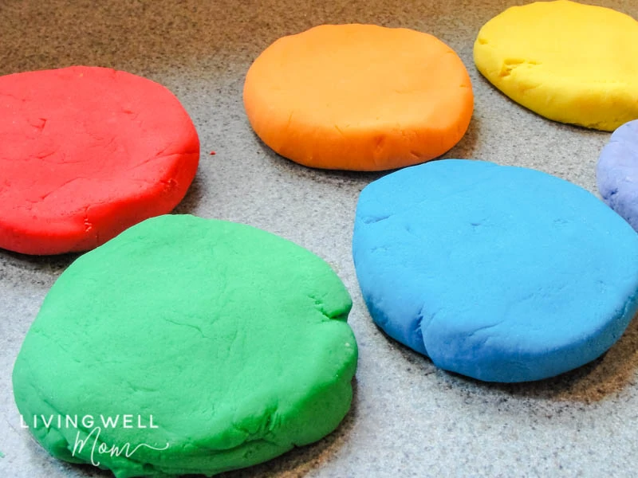

Playdough Recipe

Description:
Natural Homemade Play Dough
Ingredients:
- all-purpose flour - 1 cup
- water
- cream of tartar - 2 tsp
- cheap table salt - 1/3 cup
- vegetable or canola oil
- gel food coloring
Directions:
- Add flour, cream of tartar, and salt to a saucepan
- Add water, vegetable oil, and food coloring
- Cook and stir until your playdough starts to solidify
- Keep stirring
- Remove from the saucepan and cool
- Squish and knead your doh to remove lumps